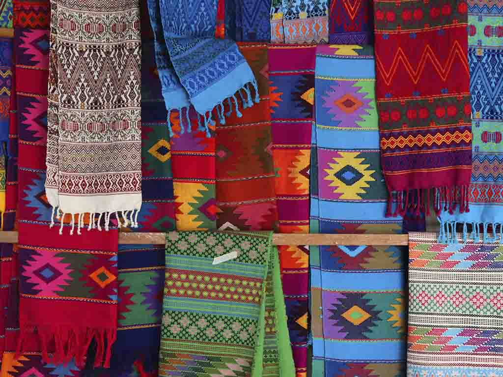
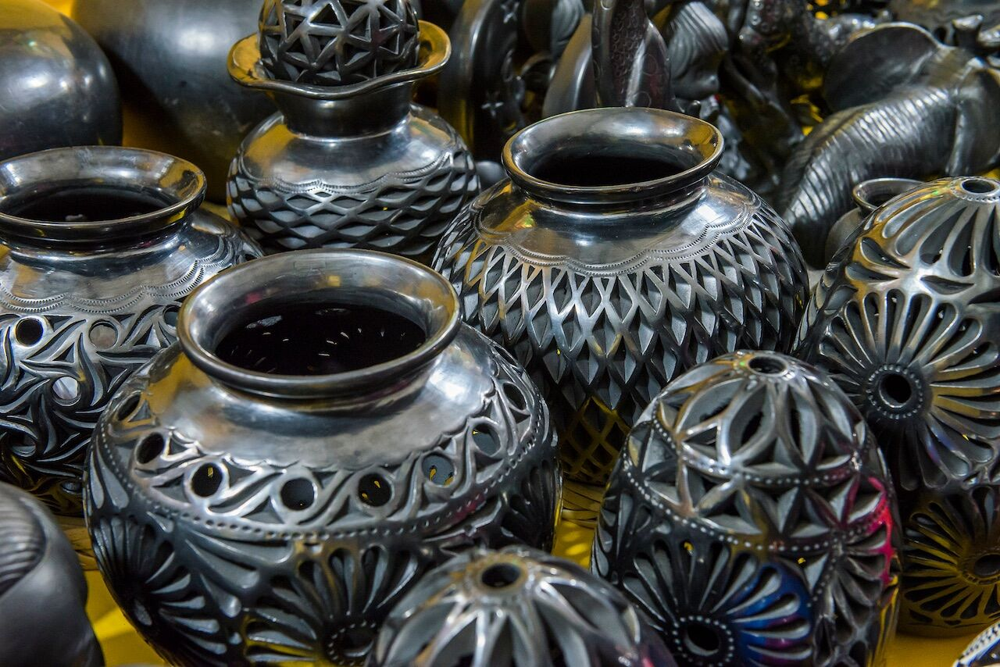
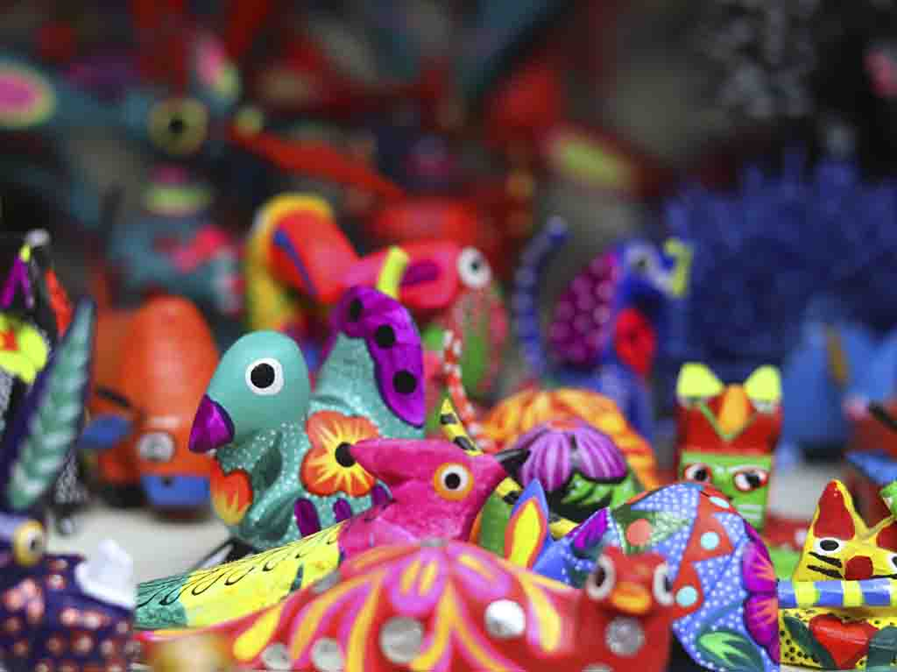
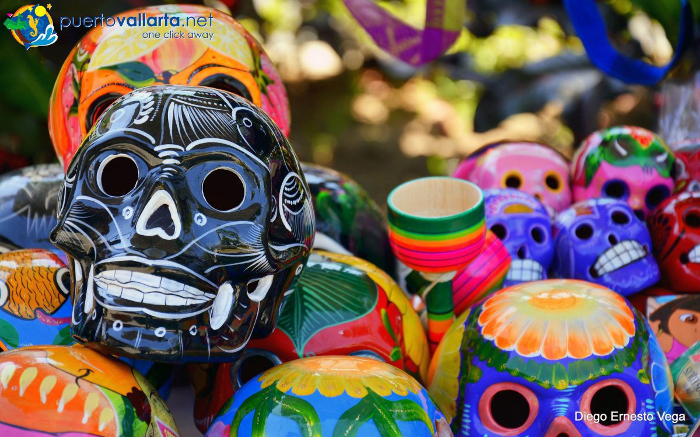
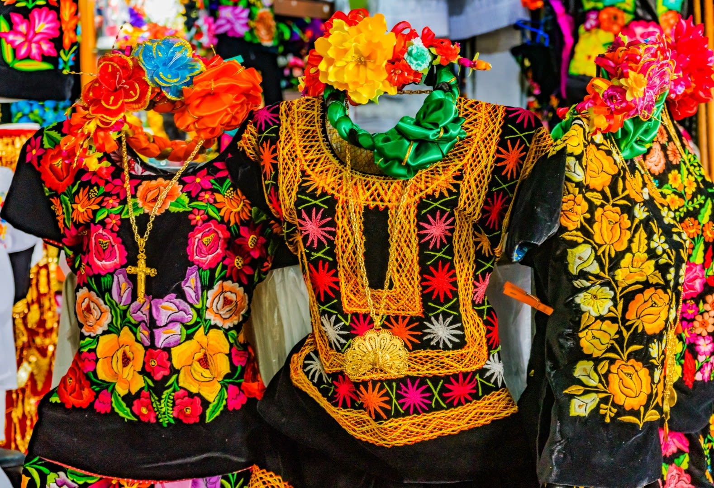
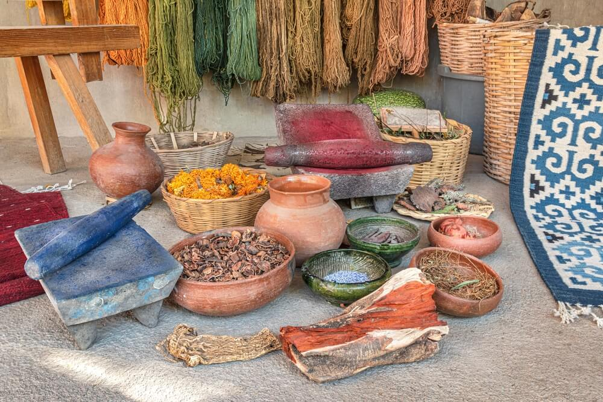
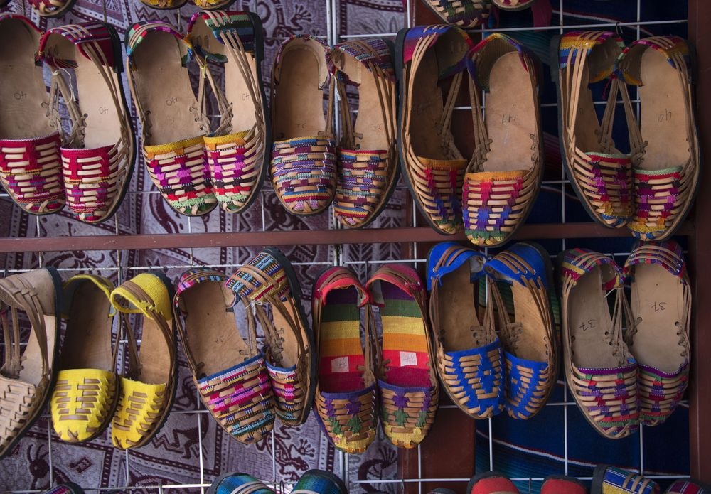

Galería
Para presumir que visitaste Oaxaca, nada mejor que regresar con artesanías. El gran trabajo de los artesanos oaxaqueños se destaca en diferentes técnicas, desde cartonería con los famosos alebrijes y máscaras, pasando por coloridos textiles, cuadros con gráfica popular y hasta las piezas de barro negro y cerámica. |







